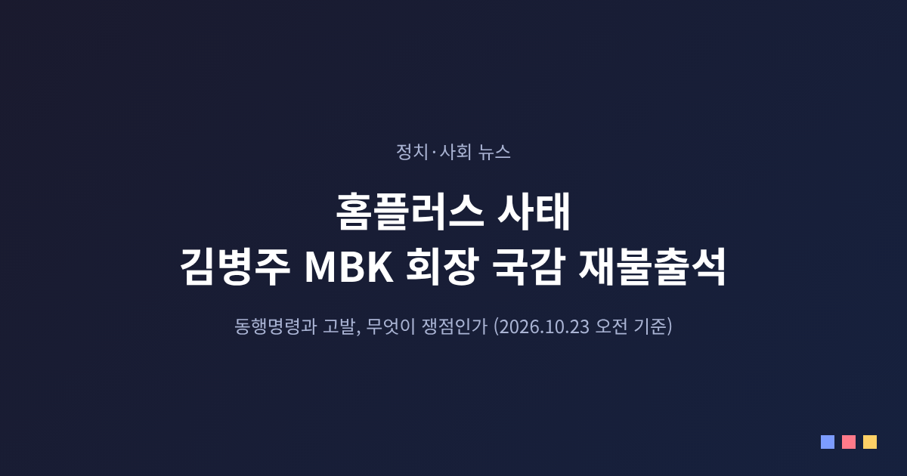
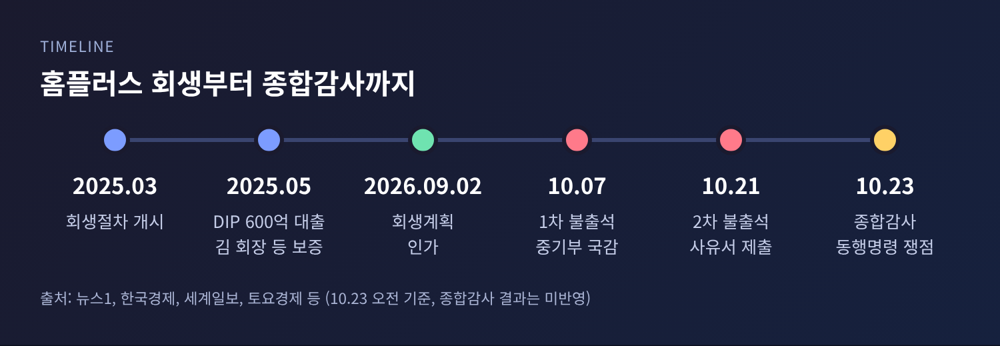
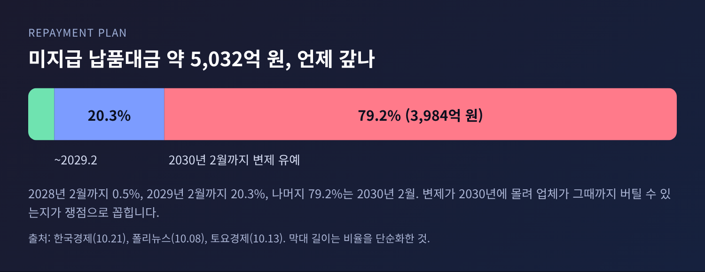
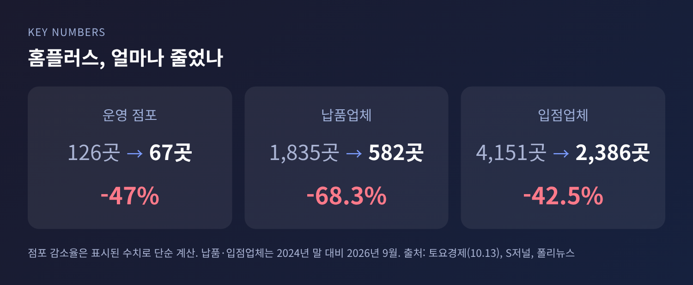
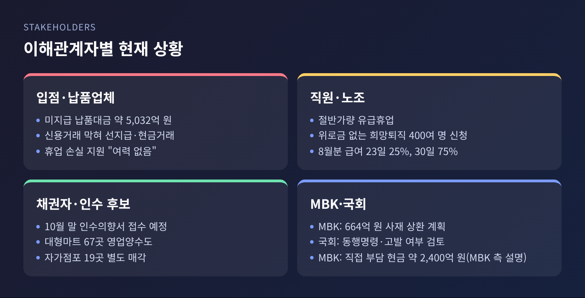
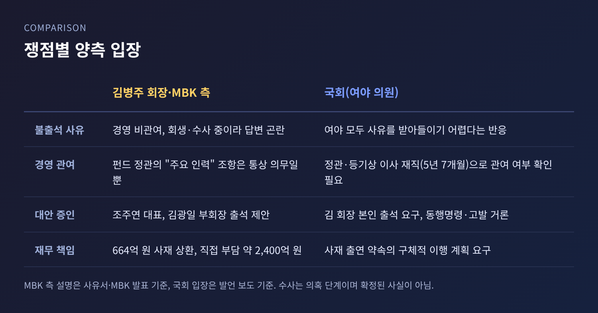

홈플러스 사태 김병주 MBK 회장 국감 재불출석, 동행명령 쟁점은

이번 글에서는 홈플러스 사태를 둘러싼 김병주 MBK파트너스 회장의 국정감사 불출석 문제를 정리해 보겠습니다. 김 회장은 10월 7일에 이어 10월 21일 두 번째 불출석 사유서를 냈고, 23일 산업통상자원중소벤처기업위원회(산중위) 종합감사에서 동행명령장 발부와 고발 여부가 갈릴 전망입니다. 이 글은 10월 23일 오전까지 확인된 보도를 기준으로 하며, 종합감사의 실제 결과는 반영하지 못했습니다.
■ 무슨 일이 있었나
김 회장은 10월 7일 중소벤처기업부 국감 증인으로 채택됐지만 나오지 않았습니다. 사유서에는 세 가지 이유가 담겼습니다. MBK는 투자금 유치와 투자자 관리가 주업이라 개별 피투자회사 경영에 관여하지 않는다는 것, 홈플러스가 법원 회생절차 중이라는 것, 관련 수사가 진행 중이라 증언이 수사에 영향을 줄 수 있다는 것입니다.
산중위는 여야 합의로 김 회장을 23일 종합감사 증인으로 다시 불렀습니다. 그러자 김 회장은 21일 김성원 위원장실에 두 번째 사유서를 보냈습니다. 출석하더라도 홈플러스 긴급경영안정자금 지원과 입점 상인 피해 질의에 충분히 답하기 어렵다는 취지였습니다. 대신 조주연 홈플러스 대표와 김광일 MBK 부회장의 출석을 제안했습니다.
22일 국감에서는 국민의힘 우재준 의원이 동행명령 의결을 촉구했습니다. 김 위원장은 여야 간사 협의를 요청했고, 당시 보도 시점까지 의결은 이뤄지지 않았습니다.

■ 왜 중요한가
핵심은 국회가 증인을 강제로 세울 수 있느냐, 그리고 사모펀드 운용사 대표가 투자회사의 책임을 어디까지 지느냐입니다.
국회증언감정법에 따르면 정당한 이유 없는 불출석에는 위원회 의결로 동행명령을 할 수 있습니다. 동행명령마저 거부하면 고발 대상이 될 수 있고, 처벌 기준은 3년 이하 징역 또는 1,000만~3,000만 원 이하 벌금으로 보도됐습니다. 출석요구서는 출석일 7일 전까지 송달해야 한다는 절차도 있습니다.
한편 홈플러스 현장의 피해는 숫자로 확인됩니다. 회생계획 기준 미지급 납품대금은 약 5,032억 원입니다. 이 가운데 79.2%인 3,984억 원은 2030년 2월에야 갚도록 돼 있습니다. 2028년 2월까지 0.5%, 2029년 2월까지 20.3%라는 일정이어서, 소상공인 납품업체가 그때까지 버틸 수 있느냐는 질문이 따라붙습니다.


■ 이해관계자별로 보면
예전엔 납품업체 1,835곳, 지금은 582곳입니다. 2024년 말 1,835곳이던 납품업체는 2026년 9월 582곳으로 68.3% 줄었고, 입점업체는 4,151곳에서 2,386곳으로 42.5% 감소했습니다.
입점업체와 납품업체의 처지는 이렇습니다. 조주연 대표는 12일 정무위 국감에서 퇴거 업체에 원상복구 비용은 청구하지 않지만, 휴업 기간 손실을 보전할 여력은 없다고 답했습니다. 신용거래가 막혀 선지급과 현금거래만 가능한 점도 재고와 매출 확대의 걸림돌로 꼽았습니다.
직원들은 절반가량이 유급휴업 상태입니다. 위로금 없는 희망퇴직에는 400여 명이 신청한 것으로 보도됐습니다. 미지급 급여와 추석 상여금, 퇴직금은 다음 달 14일 일괄 지급될 예정이고, 8월분 미지급 급여는 25%를 23일, 75%를 30일에 주기로 했습니다. 노조는 임금 지급 지연과 상품 부족을 들어 정상화 계획의 실효성을 우려했습니다.
채권자 쪽에서는 회사가 10월 말까지 인수의향서를 받을 계획입니다. 본사와 온라인사업부, 대형마트 67곳을 영업양수도 방식으로 넘기고, 폐점한 자가점포 19곳은 따로 판다는 구상입니다. 조 대표는 M&A가 계획대로 진행돼야 사태가 풀린다고 말했습니다. 다만 영업 정상화가 늦어져 새 주인을 찾기도 쉽지 않다는 보도가 나왔습니다.

■ 쟁점은 경영 관여 여부
양쪽 주장은 엇갈립니다.
여야 의원들은 대체로 사유서를 받아들이기 어렵다는 반응입니다. 우재준 의원은 김 회장을 "대한민국 최고 자산가"라 부르며 소상공인 물품대금이 밀린 상황을 지적했고, 동행명령 의결과 불응 시 고발을 제안했습니다. 더불어민주당 의원들도 이 제안에 동의한 것으로 전해졌습니다. 민주당 박상혁 의원실은 인수 관련 펀드 정관에 김 회장이 주요 인력으로 적혀 있고, 주요 인력 5명 이상이 투자 대상 기업 운영에 적극 관여해야 한다는 조항이 있다고 짚었습니다.
MBK 측은 반박합니다. 해당 조항은 펀드 운용에 전념하라는 통상적 의무일 뿐, 개별 기업의 일상 경영에 관여하라는 뜻은 아니라는 설명입니다. 등기상 김 회장은 2015년 10월부터 2021년 5월까지 약 5년 7개월간 홈플러스 기타비상무이사였습니다. 다만 기타비상무이사는 일상 업무를 직접 집행하는 자리가 아니어서, 이사회 참여만으로 관여를 단정하기는 어렵다는 지적도 함께 나옵니다.
MBK는 재무적 책임도 이행하고 있다고 설명합니다. 김 회장이 큐리어스파트너스의 DIP 대출 원금 600억 원과 이자 64억 원, 합계 664억 원을 사재로 갚겠다고 밝혔고, 이 가운데 342억 원을 먼저 변제했다는 것입니다. 홈플러스에 구상권도 행사하지 않겠다는 입장입니다. 회생 개시 후 직접 부담한 현금이 약 2,400억 원, 대출과 보증을 포함하면 약 6,000억 원이라는 것이 MBK 측 설명입니다. 다만 이는 MBK 측 설명이며, 국회에서는 사재 출연 약속의 구체적 이행 계획을 더 요구하고 있습니다.
수사도 변수입니다. 보도에 따르면 서울중앙지검이 단기사채 발행과 관련한 사기 혐의를 수사 중입니다. 어디까지나 의혹 단계이며, 법원의 판단은 나오지 않았습니다. 김 회장 측은 이를 불출석의 이유로 들고, 정치권은 그럴수록 직접 설명해야 한다고 맞섭니다.

■ 앞으로의 전망
23일 종합감사에서 갈릴 경우의 수는 크게 둘입니다. 김 회장이 출석하면 경영 관여 여부와 사재 출연 계획을 놓고 직접 질의가 이뤄질 것입니다. 나오지 않으면 산중위가 동행명령장 발부를 의결할지, 이후 증언감정법에 따른 고발로 이어갈지 판단하게 됩니다. 동행명령에는 위원회 의결이 필요하고, 위원장이 여야 간사 협의를 거치겠다고 밝힌 만큼 정치적 합의가 관건입니다. 이 글을 쓰는 시점에는 결과를 확인하지 못했습니다.
국감과 별개로 10월 말 인수의향서 접수가 다음 고비입니다. 인수자가 나타나느냐에 따라 납품대금 변제 속도와 직원 고용이 달라집니다.
정리하면 이렇습니다. 이번 사안은 한 사람의 출석 여부를 넘어, 사모펀드의 책임 범위와 국회 증인 제도의 실효성을 함께 묻고 있습니다.
"누가 책임지느냐"보다 "누가 먼저 설명하느냐"가 먼저일지 모릅니다.
종합감사가 끝나면 어떤 설명이 오갔는지, 5,032억 원의 납품대금이 어떤 경로로 갚아질지 다시 살펴보시길 권합니다.